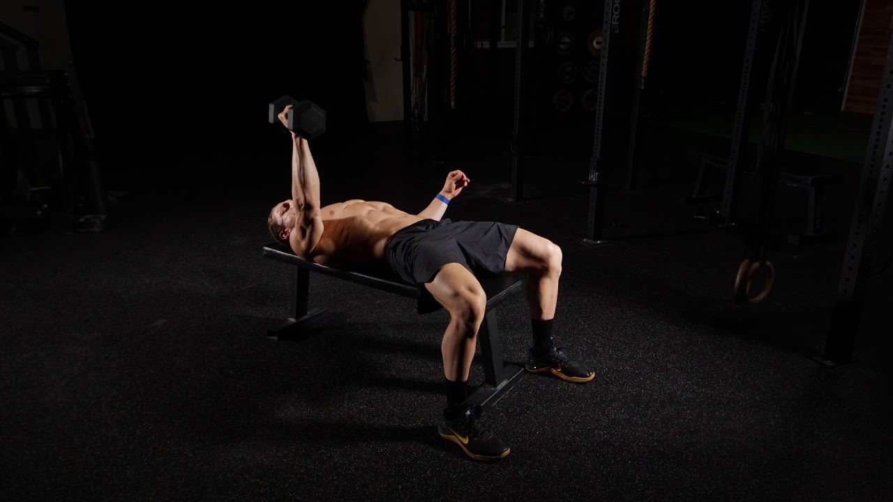
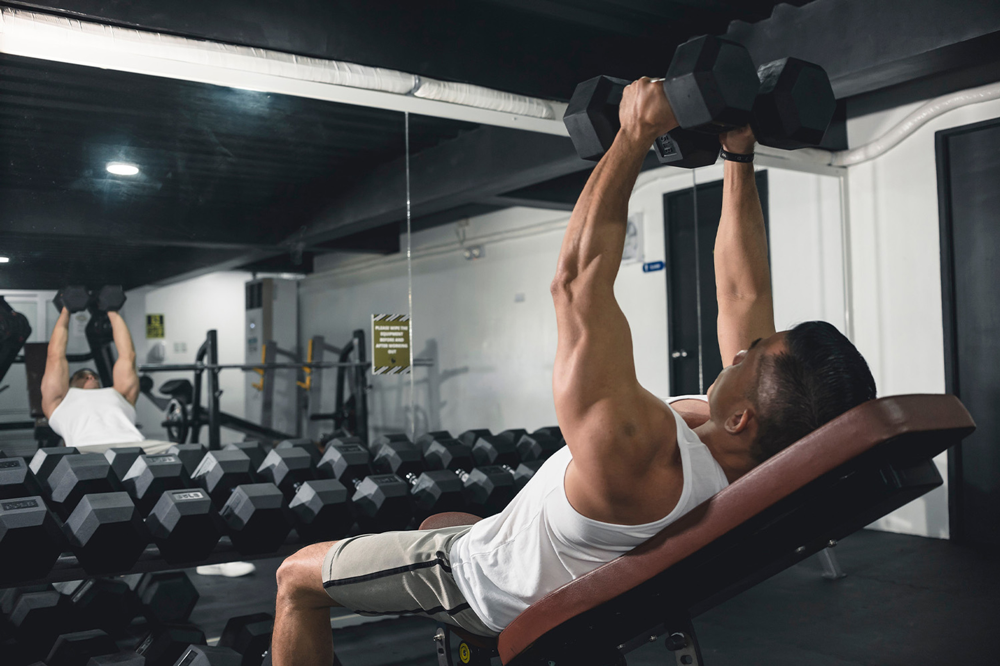

The Barbell Bench Press is a classic strength-training exercise that primarily targets the chest muscles, while also engaging the shoulders and triceps. It's a fundamental movement for building upper body strength and muscle mass.
Key Benefits:
Muscle Development: The Barbell Bench Press is highly effective for building strength and muscle mass in the chest, shoulders, and triceps.
Compound Movement: It's a compound exercise, meaning it involves multiple joints and muscle groups working together, which leads to efficient calorie burning and muscle growth.
Strength Gains: Regularly performing the Barbell Bench Press can lead to significant improvements in upper body strength, allowing you to lift heavier weights and perform better in other exercises.
Functional Strength: The movement pattern of the Bench Press mimics pushing motions used in various daily activities and sports, making it a functional exercise for overall athleticism.
How to Perform:
Setup: Lie flat on a bench with your feet planted firmly on the ground. Grip the barbell slightly wider than shoulder-width apart, with your hands in a pronated (palms facing away) position.
Execution: Lower the barbell towards your chest in a controlled manner, keeping your elbows at a 45-degree angle to your body. Aim to touch the barbell lightly to your chest or just below, then press it back up to the starting position, fully extending your arms without locking out your elbows.
Repeat: Complete the desired number of repetitions with proper form, ensuring a smooth and controlled movement throughout.
Safety Tips:
Always use a spotter, especially when lifting heavy weights, to help you in case you need assistance.
Keep your lower back pressed against the bench and your feet firmly planted on the ground to maintain stability.
Use a weight that allows you to maintain proper form throughout the exercise. Avoid excessive arching of the back or bouncing the barbell off your chest.
If you experience any discomfort or pain, stop the exercise immediately and seek guidance from a qualified fitness professional.
Incorporate the Barbell Bench Press into your strength-training routine to build a strong and well-developed upper body, enhancing your overall physique and performance.
Dumbbell Bench Press
Description:
The Dumbbell Bench Press is a versatile upper body exercise that targets the chest, shoulders, and triceps. By using dumbbells instead of a barbell, it allows for greater range of motion and engages stabilizing muscles for improved balance and strength.
Key Benefits:
Stabilization: Unlike the barbell bench press, the Dumbbell Bench Press requires each arm to work independently, promoting balanced muscle development and enhancing stabilizer muscle strength.
Range of Motion: Using dumbbells allows for a greater range of motion compared to a barbell, which can lead to increased muscle activation and development in the chest and shoulders.
Joint Health: The freedom of movement provided by dumbbells can reduce stress on the shoulder joints, making the exercise more comfortable and suitable for individuals with shoulder issues.
Versatility: Dumbbells offer endless variations of the bench press, including incline and decline angles, allowing you to target different areas of the chest and shoulders for a well-rounded upper body workout.
How to Perform:
Setup: Lie flat on a bench with a dumbbell in each hand, positioned directly above your chest. Your feet should be planted firmly on the ground.
Grip and Alignment: Hold the dumbbells with a neutral grip (palms facing inward), aligning them with the center of your chest.
Execution: With control, lower the dumbbells towards your chest while keeping your elbows at a 45-degree angle to your body. Aim to touch the dumbbells lightly to your chest or just below, then press them back up to the starting position, fully extending your arms without locking out your elbows.
Repeat: Complete the desired number of repetitions with proper form, maintaining a smooth and controlled movement throughout.
Safety Tips:
Start with lighter weights to master the technique before progressing to heavier loads.
Keep your core engaged and your lower back pressed against the bench to maintain stability.
Ensure equal effort from both arms throughout the exercise to prevent muscle imbalances.
If you experience any discomfort or pain, stop the exercise immediately and seek guidance from a qualified fitness professional.
Incorporate the Dumbbell Bench Press into your workout routine to build strength, size, and definition in your chest, shoulders, and arms, while improving overall upper body function and performance.
Alternating Dumbbell Bench Press
Description:
The Alternating Dumbbell Bench Press is a variation of the traditional Dumbbell Bench Press that involves alternating the pressing motion between each arm. This exercise targets the chest, shoulders, and triceps while also engaging the core for stability.
Key Benefits:
Bilateral Symmetry: By alternating between each arm, this exercise helps to address any muscle imbalances between the left and right sides of the body, promoting balanced muscle development.
Stabilization: Performing the press with one arm at a time requires increased stabilization from the core and supporting muscles, enhancing overall stability and control.
Range of Motion: Alternating between arms allows for a greater range of motion compared to pressing both dumbbells simultaneously, which can lead to increased muscle activation and development.
Functional Strength: The movement pattern of the Alternating Dumbbell Bench Press mimics pushing motions used in various daily activities and sports, making it a functional exercise for overall athleticism.
How to Perform:
Setup: Lie flat on a bench with a dumbbell in each hand, positioned directly above your chest. Your feet should be planted firmly on the ground.
Grip and Alignment: Hold the dumbbells with a neutral grip (palms facing inward), aligning them with the center of your chest.
Execution: Begin by pressing one dumbbell upward while keeping the other arm at the starting position. Lower the pressed dumbbell back down in a controlled manner, then press the other dumbbell upward. Continue alternating between arms for the desired number of repetitions.
Repeat: Complete the alternating press with proper form, maintaining a smooth and controlled movement throughout.
Safety Tips:
Start with lighter weights to master the technique before progressing to heavier loads.
Keep your core engaged and your lower back pressed against the bench to maintain stability.
Ensure equal effort from both arms throughout the exercise to prevent muscle imbalances.
If you experience any discomfort or pain, stop the exercise immediately and seek guidance from a qualified fitness professional.
Incorporate the Alternating Dumbbell Bench Press into your workout routine to build strength, size, and definition in your chest, shoulders, and arms, while improving overall upper body function and performance.
Hips-Off, Single-Arm Bench Press

Description:
The Hips-Off, Single-Arm Bench Press is a dynamic variation of the traditional bench press, targeting not only your chest, shoulders, and arms but also engaging your core and stabilizing muscles to a greater extent.
Key Benefits:
Core Activation: By elevating one side of your body, this exercise demands increased core engagement to stabilize your body throughout the movement.
Balance and Coordination: Performing unilateral movements like the single-arm bench press helps to address muscle imbalances and improve coordination between your left and right sides.
Functional Strength: Mimicking real-life movements, this exercise enhances your functional strength, which translates into better performance in everyday activities and sports.
Increased Range of Motion: With one hip off the bench, you can achieve a deeper range of motion, maximizing muscle activation and promoting greater muscle growth and development.
How to Perform:
Setup: Lie down on a flat bench with a dumbbell in one hand. Position yourself so that only one hip remains in contact with the bench, while the other side is raised off the bench.
Grip and Alignment: Hold the dumbbell with a neutral grip (palm facing inward), aligning it with the center of your chest.
Execution: With control, lower the dumbbell towards your chest while keeping your elbow close to your body. Maintain stability through your core and avoid excessive twisting or tilting of your torso. Press the weight back up to the starting position, fully extending your arm without locking out your elbow.
Repeat: Complete the desired number of repetitions on one side before switching to the other side. Ensure balanced performance on both sides to prevent muscle imbalances.
Safety Tips:
Start with a lighter weight to master the technique before gradually increasing the resistance.
Keep your movements slow and controlled, focusing on maintaining proper form throughout the exercise.
Engage your core muscles to stabilize your body and prevent excessive arching of your lower back.
If you experience any discomfort or pain, discontinue the exercise and consult with a fitness professional.
Incorporate the Hips-Off, Single-Arm Bench Press into your training routine to challenge your muscles in new ways and unlock gains in strength, stability, and overall athleticism.
Cable Crossover
Description:
The Cable Crossover is a highly effective isolation exercise that targets the chest muscles, specifically the pectoralis major. This exercise involves pulling cables or resistance bands across the body to create tension in the chest, shoulders, and arms.
Key Benefits:
Isolation: The Cable Crossover isolates the chest muscles, allowing for focused tension and contraction to maximize muscle growth and development.
Range of Motion: Unlike traditional pressing movements, the Cable Crossover allows for a greater range of motion, which can lead to increased muscle activation and development in the chest.
Variability: Cables or resistance bands provide constant tension throughout the movement, making the Cable Crossover a versatile exercise suitable for individuals of all fitness levels.
Bilateral Symmetry: By using separate cables or handles for each arm, the Cable Crossover helps to address any muscle imbalances between the left and right sides of the body.
How to Perform:
Setup: Adjust the pulleys on a cable machine to the highest position. Attach handles to the pulleys and select an appropriate weight.
Position: Stand in the center of the cable machine, holding one handle in each hand. Take a step forward to create tension in the cables.
Execution: Keeping a slight bend in your elbows, bring your hands together in front of your body, crossing them over at chest level. Focus on squeezing your chest muscles throughout the movement.
Return: Slowly reverse the movement, allowing your arms to return to the starting position under control. Maintain tension in the cables throughout.
Safety Tips:
Start with a light weight to master the technique before increasing the resistance.
Maintain a slight bend in your elbows throughout the movement to avoid strain on the joints.
Keep your core engaged and your feet firmly planted on the ground to maintain stability.
If you experience any discomfort or pain, stop the exercise immediately and seek guidance from a qualified fitness professional.
Incorporate the Cable Crossover into your chest workout routine to target and strengthen your chest muscles from various angles, promoting muscle growth, definition, and overall upper body strength.
Incline Dumbbell Press

Description:
The Incline Dumbbell Press is a variation of the traditional Dumbbell Bench Press that targets the upper chest muscles. By adjusting the bench to an incline position, this exercise places more emphasis on the clavicular portion of the pectoralis major.
Key Benefits:
Upper Chest Development: The Incline Dumbbell Press specifically targets the upper portion of the chest, helping to create a more balanced and well-defined chest appearance.
Shoulder Stability: Performing the press on an incline bench requires greater stabilization from the shoulder muscles, contributing to improved shoulder stability and strength.
Functional Strength: The movement pattern of the Incline Dumbbell Press mimics pushing motions used in various daily activities and sports, making it a functional exercise for overall upper body strength and athleticism.
Joint Health: The inclined position of the bench reduces strain on the shoulder joints, making the exercise more comfortable and suitable for individuals with shoulder issues.
How to Perform:
Setup: Adjust an incline bench to a 30-45 degree angle. Sit on the bench with a dumbbell in each hand, positioned at shoulder level.
Grip and Alignment: Hold the dumbbells with a neutral grip (palms facing inward), aligning them with the center of your chest.
Execution: Press the dumbbells upward and slightly inward, focusing on squeezing your chest muscles at the top of the movement. Keep a slight bend in your elbows throughout the exercise.
Return: Lower the dumbbells back down in a controlled manner until your elbows are at or slightly below shoulder level. Maintain tension in your chest muscles throughout the movement.
Safety Tips:
Start with a lighter weight to master the technique before progressing to heavier loads.
Keep your core engaged and your feet firmly planted on the ground to maintain stability.
Ensure equal effort from both arms throughout the exercise to prevent muscle imbalances.
If you experience any discomfort or pain, stop the exercise immediately and seek guidance from a qualified fitness professional.
Incorporate the Incline Dumbbell Press into your chest workout routine to target the upper chest muscles, enhance shoulder stability, and build a well-rounded upper body physique.